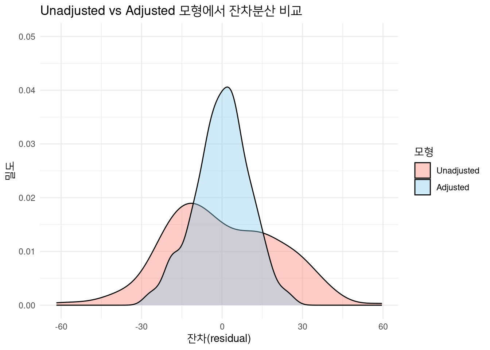

RCT의 경우 대부분 Internal validity의 측면에선 완전하기 때문에, 별다른 공변량의 보정 없이 보고 싶은 변수(ex. 치료 여부 와 결과 여부)만 분석 모형에 포함한 이후에 분석을 하게 됩니다. 다만, 이런 RCT의 경우에도 통계적으로 완전하지 않을 수 있습니다.
Random imbalance
RCT에 참여하게 된 환자를 완전하게 랜덤으로 나누게 되더라도, 통계적으로 두 집단의 특성이 완전히 일치하지 않을 수 있습니다(ex. 한 그룹의 나이가 다른 그룹보다 많을 수 있습니다). 이를 Random imbalance라고 부르는데, 집단의 특성이 여러개인 경우(ex. 나이 성별 당뇨병 유무 등등) 그 중 하나의 특성이라도 차이날 확률을 아래와 같이 계산해볼 수 있습니다 .
결과에서 알 수 있듯이, 사람의 수가 4000명이라고 가정하였을 때 보고 싶은 공변량의 갯수가 20개 이상만 되어도 하나 이상의 특성이 두 집단에서 차이가 날 확률이 50프로가 넘게 됩니다. 따라서 RCT에서도 공변량이 많은 경우 두 그룹의 모든 특성이 항상 완전히 일치한다고 말하기는 힘듭니다.
잔차분산
잔차분산(residual variance)은 회귀모델이 설명하지 못한 남은 변동량을 나타냅니다.잔차는\(\hat\varepsilon\_i = y_i - \hat y_i\) (관측값 (y_i)에서 모델 예측값 (\(\hat y_i\))를 뺀 값)으로 정의되고, 잔차분산 추정치는아래와 같이 계산됩니다.
“치료효과만” 조정한 모형(unadjusted)과 “치료효과 + baseline”을 함께 조정한 모형(adjusted)이 잔차분산에서 어떻게 달라지는지 살펴봅니다.
모델 가정 \[
y_i = \alpha + \tau,T_i + \beta,X_i +
\varepsilon\_i,\quad \varepsilon\_i\sim N(0,\sigma^2)
\]\[
T_i: treatment 지시자, X_i: baseline 공변량 (예: 기저혈압), \varepsilon\_i: 순수 오차항
\] 이 실제 모델이라고 가정하겠습니다. 즉, baseline에 있는 공변량이 치료 결과에 영향을 미친다고 가정을 하겠습니다(실제 임상에서도 age, DM 유무와 같은 baseline covariate의 경우 치료 결과에 영향을 미치기 때문에 보다 현실적인 가정이라 할 수 있습니다.)
Unadjusted 모형의 경우 아래와 같이 설정할 수 있습니다. \[
y_i = \alpha' + \tau',T_i + e_i, \quad e_i = \beta,X_i +
\varepsilon\_unadjusted
\]\[
잔차분산: \mathrm{Var}(e_i) =
{\text{baseline이 설명하는 분산}} +
{\text{실제 분산}}.
\] 으로 계산이 됨을 알 수 있습니다. Adjusted의 경우 모델이 아래와 같습니다. \[
y_i = \alpha + \tau,T_i + \beta,X_i + \varepsilon\_adjusted
\] 따라서 baseline을 포함하는 경우 실제 잔차에 더 가까운 추정을 할 수 있으며, 이는 잔차분산이 줄어들어 잔차의 밀도곡선이 더 좁아지고,결과적으로 treatment 효과의 표준오차(SE)가 감소하여 추론이 더 정밀해진다는 것을 알 수 있습니다다. 아래의 R code로 한번 테스트를 해보겠습니다
library(ggplot2)library(reshape2)set.seed(123)n<-200baseline<-rnorm(n, mean =150, sd =20)treat<-rbinom(n, 1, 0.5)y<-baseline-20*treat+rnorm(n, sd =10)df<-data.frame(y, treat =factor(treat), baseline)# Unadjusted 모형m0<-lm(y~treat, data =df)df$res0<-resid(m0)# Adjusted 모형(baseline을 포함)m1<-lm(y~treat+baseline, data =df)df$res1<-resid(m1)df_long<-melt(df, measure.vars =c("res0","res1"), variable.name ="model", value.name ="residual")ggplot(df_long, aes(x =residual, fill =model))+geom_density(alpha =0.4)+coord_cartesian(ylim =c(0, 0.05))+labs( title ="Unadjusted vs Adjusted 모형에서 잔차분산 비교", x ="잔차(residual)", y ="밀도")+scale_fill_manual( name ="모형", values =c("res0"="salmon", "res1"="skyblue"), labels =c("Unadjusted", "Adjusted"))+theme_minimal()

결과에서 살펴보실 수 있듯이, 치료군을 랜덤으로 배정한 경우에도 결과에 영향을 미치는 covariate 변수를 보정하였을 때 표준오차가 감소하여 더 정밀한 추론이 가능해집니다.
이제 문서의 내용을 본격적으로 살펴보도록 하겠습니다.
General Considerations
기본적으로 Unadjusted 분석도 허용을 한다고 되어 있습니다. 하지만 효율성을 위해 예측력이 높은 Covariate들을 사전 지정해 분석 모형에 포함하는 것을 권고한다는 것이 앞으로의 내용이 될 예정입니다. 또한 어떤 방식을 1차로 할지(adjust vs unadjust)는 사전분석계획에 반드시 명시해야한다고 되어있습니다.
조정할 공변량(Covariate)의 선택
Covariate를 조정하게 되면 앞서 살펴본 바와 같이 variability가 감소되어 신뢰구간이 좁아지고 가설 검정력이 올라가게 됩니다. 다만, Covariate가 결과변수에 영향을 미치는 변수여야efficiency gain이 있습니다. 따라서, 예측력 낮은 Covariate 조정은 도움이 없거나 해가 될 수 있기 때문에 의미 있는 변수들로만 잘 선택하는 것이 중요합니다. 상관관계가 높은 Covariate끼리 조정해도 괜찮지만 (ex. BMI와 weight) 낮은 Covariate들을 선택했을 때 정밀도가 더 올라가게 됩니다.
층화에 사용한 변수도 Covariate에 포함하는 것이 좋습니다.
예를 들어, 당뇨유무로 환자군을 층화하여 랜덤으로 치료군을 배정하였다고 가정해봅시다. 이런 경우에도 최종 모델에는 당뇨변수를 포함하여야 결과가 보다 정확할 수 있습니다. 아래와 같은 예시를 살펴 보겠습니다.
set.seed(123)n_stratum<-800#dm 유무를 기준으로 층화한 이후에 치료군 배정을 랜덤화dm<-rep(c(0,1), each =n_stratum)treatment<-rep(rep(c(0,1), each =n_stratum/2), times =2)y<-2*treatment+5*dm+rnorm(2*n_stratum, sd =3)df<-data.frame(y, treatment =factor(treatment), dm =factor(dm))#dm 유무를 반영하지 않은 모델m1<-lm(y~treatment, data =df)#dm 유무를 반영한 모델m2<-lm(y~treatment+dm, data =df)results<-data.frame( Model =c("Unadjusted", "Adjusted"), Estimate =c(coef(summary(m1))["treatment1","Estimate"],coef(summary(m2))["treatment1","Estimate"]), StdError =c(coef(summary(m1))["treatment1","Std. Error"],coef(summary(m2))["treatment1","Std. Error"]))print(results)
예시의 결과를 살펴보시면, 당뇨의 유무가 최종 치료결과에 영향을 미치게 되기 때문에 이를 반영하였을 떄 표준오차가 줄어드는 것을 알 수 있습니다. (치료군을 랜덤 배정했기 때문에 두 모델 모두 estimate는 실제 값인 2에 가깝게 추정을 하고 있다는 것을 알 수 있습니다) 이와 같이 공변량에 따라 표준오차가 달라질 수 있기때문에, 사용할 공변량을 미리 공시하였을 경우 sample size와 power 계산 또한 원래의 계획(adjusted, unadjusted)에 맞춰 진행하여야 하고, covariate와 함께 randomization을 진행 할 수 있습니다. 다만, covariate의 개수가 samplesize에 비해 많은 경우 이는 모델이 overfitting되어 예측력이 떨어질 수 있습니다.
사용할 변수에 대해 기저와 함께 추후의 결과 값을 함께 기록해야합니다.
절대적인 변화값만을 사용하였을때는 그 값의 변화 여부가 정확하게 반영이 되지 않을 수 있습니다.(ex. 혈압이 130에서 150으로 오른 것과 170에서 190으로 오른 것이 임상적으로 시사하는 의미가 다를 수 있습니다) 따라서 기저와 함께 추후의 결과값을 함께 기록하거나, 변화량 대신 기저 측정값을 공변량으로 넣는 것을 권고합니다. 아래의 예시를 통해 살펴보겠습니다.
set.seed(123)n<-1000baseline<-rnorm(n, 150, 10)treatment<-rep(0:1, each =n/2)final<-0.5*baseline-20*treatment+rnorm(n, 0, 5)data<-data.frame(baseline, treatment =factor(treatment), final)#baseline을 반영하지 않은 모델m0<-lm(final~treatment, data =data)est0<-coef(summary(m0))["treatment1", "Estimate"]se0<-coef(summary(m0))["treatment1", "Std. Error"]#basline을 정확히 반영한 모델m2<-lm(final~treatment+baseline, data =data)est2<-coef(summary(m2))["treatment1", "Estimate"]se2<-coef(summary(m2))["treatment1", "Std. Error"]#차이의 절댓값만 반영한 모델delta<-data$final-data$baselinem1<-lm(delta~treatment, data =data)est1<-coef(summary(m1))["treatment1", "Estimate"]se1<-coef(summary(m1))["treatment1", "Std. Error"]data.frame( Model =c("Unadjusted", "Baseline adj.", "Delta model"), Estimate =c(est0, est2, est1), SE =c(se0, se2, se1))
Model Estimate SE
1 Unadjusted -20.02198 0.4667181
2 Baseline adj. -19.82104 0.3184145
3 Delta model -19.65273 0.4278252
결과를 살펴보면 알 수 있듯이 baseline을 함께 반영한 모델이 가장 낮은 표준오차를 보여주고, 아예 보정을 하지 않은 모델이나 차이만을 사용한 모델의 경우 다소 예측력이 떨어진다는 것을 알 수 있습니다. 따라서 다음과 같은 권고안 들이 있습니다.
결과를 변화값 대신 백분율 변화로 정의하려면(Noninferiority trial에서 군간 평균 차이 대신 ratio 쓰고 싶으면) 사전에 심사부서와 결과 정의및 조정방식을 협의해야함
비율은 non-collapsibility 문제로 해석이 복잡하고, difference 방식이 해석에 더 직관적이라 FDA에서 가장 권장
Collapsibility의 경우 아래의 예시를 살펴보면 알 수 있습니다.
Subgroup
% of Population
Success Rate (New drug)
Success Rate (Placebo)
Odds Ratio
Biomarker‑positive
50%
80.0%
33.3%
8.0
Biomarker‑negative
50%
25.0%
4.0%
8.0
Combined
100%
52.5%
18.7%
4.8
두 그룹에서의 OR이 모두 동일한데, 두 그룹을 합친 경우 OR이 오히려 낮아진다는 것을 알 수 있습니다. 이를 non-collapsibility라 하고, 따라서 collapsible한 변수인 Risk difference와 같은 변수들이 임상적 해석이 더 용이하여 권고한다 되어있습니다.
Linear Models
ATE(평균 효과) 추정
RCT의 경우 선형 모델이 정확하지 않더라고 전체 집단의 평균 효과를 추정하는데는 편향이 없습니다. 따라서 회귀 계수가 전체 모집단 수준에서 추정이 가능하나, 모형이 현실을 더 잘 포착하면 분산이 줄어들어 검정력은 올라가게 됩니다. 아래의 예시를 통해 살펴보겠습니다.
set.seed(123)n<-500reps<-100ests_unadj<-se_unadj<-numeric(reps)ests_adj_lin<-se_adj_lin<-numeric(reps)ests_adj_cub<-se_adj_cub<-numeric(reps)for(iinseq_len(reps)){x<-rnorm(n)tr<-rbinom(n,1,0.5)# 실제로 y는 tr과 x의 세제곱에 의해서 결정된다고 가정y<-2*tr+3*x^3+rnorm(n,0,2)# y와 tr만 살펴봅니다m0<-lm(y~tr)sm0<-summary(m0)$coefficients# y와 tr, 그리고 x의 선형관계만 살펴봅니다m1<-lm(y~tr+x)sm1<-summary(m1)$coefficients# y와 tr, 그리고 x의 비선형관계를 3차항까지 함께 살펴봅니다m2<-lm(y~tr+x+I(x^2)+I(x^3))sm2<-summary(m2)$coefficientsests_unadj[i]<-sm0["tr","Estimate"]se_unadj[i]<-sm0["tr","Std. Error"]ests_adj_lin[i]<-sm1["tr","Estimate"]se_adj_lin[i]<-sm1["tr","Std. Error"]ests_adj_cub[i]<-sm2["tr","Estimate"]se_adj_cub[i]<-sm2["tr","Std. Error"]}library(dplyr)tibble( Model =c("Unadjusted","Linear adj.","Cubic adj."), Mean_Est =c(mean(ests_unadj), mean(ests_adj_lin), mean(ests_adj_cub)), Empirical_SE =c(sd(ests_unadj), sd(ests_adj_lin), sd(ests_adj_cub)), Avg_Model_SE =c(mean(se_unadj), mean(se_adj_lin), mean(se_adj_cub)))
결과를 살펴보면 모든 모델이 실제 치료효과인 1.5는 정확하게 포착한 것을 알 수 있습니다. 다만, cluster와 이분산성이 존재하는 경우 sandwich estimator의 경우 이분산을 보정하여 nominal보다 조금 더 나은 오차를 그리고 cluster-robust와 cluster를 반영한 bootstrapping의 경우 더 정밀한 표준오차를 제공하는 것을 알 수 있습니다. 따라서 cluster와 이분산성이 존재할 수 있는 데이터의 경우 이를 고려한 통계분석을 하는 것이 결과가 보다 정확하다는 것을 알 수 있습니니다.
치료효과와 공변량 사이의 상호작용
선형모델에서 treatment x covariate를 넣을 수 있지만 ATE의 경우 평범한 선형모델의 추정량으로도 사용이 가능합니니다.
결과를 살펴보면 biomarker의 값에 따라 치료효과가 달라진다는 것을 알 수 있습니다. biomarker(0-100사이의 정규분포)가 50일때의 치료효과가 기본적인 모델로 했을때의 값인 7.6과 가장 유사함을 알 수 있습니다. 따라서 두 모델을 모두 보여주는 것이 이상적이나 전체 치료효과를 보여주는데는 기본적인 모델을 써도 기초적인 기술은 가능하다는 것을 알 수 있습니다.
Nonlinear model
모든 치료 결과 변수들이 연속변수일 수 없기 때문에 비선형 모델을 적합해야하는 경우가 많습니다.(생존분석, 결과가 이진변수) 기본적인 권고사항은 선형모델을 적합할때와 유사합니다. Subgroup 별로 treatment effect가 다를 수 있는데, OR HR 은 아까 얘기한 non-collapsibility가 존재하기 때문에 collapsible한 변수를 권고한다는 내용이 있습니다. 또한, 추정량을 사전에 정의할떄 conditional인지 unconditional인지 분명히 해야합니다.
층화된 모델에서 binary 결과의 분석
Cochran-Mantel-Hasenszel(CMH) 방법은 binary 결과이고 covariate로 층화된 상태에서 조건부 치료 효과를 추정할떄 사용됩니다. 각 층마다 OR이 동일하다는 가정하고 층화된 카이제곱 검정 같은 분석이라고 보시면 됩니다. 예시 결과는 아래와 같습니다.
set.seed(1)n_strata<-4n_per<-200OR_true<-2stratum<-rep(1:n_strata, each =n_per)treatment<-rep(rep(c(0,1), each =n_per/2), times =n_strata)base_p<-rep(c(0.1,0.2,0.3,0.4), each =n_per)logit<-function(p)log(p/(1-p))expit<-function(x)1/(1+exp(-x))p_control<-base_pp_treated<-expit(logit(base_p)+log(OR_true))y<-rbinom(length(stratum), 1,ifelse(treatment==1, p_treated, p_control))df<-data.frame(stratum, treatment =factor(treatment, levels=c(0,1)),y)tab<-with(df, table(stratum, treatment, y))res<-mantelhaen.test(tab)res
결과를 살펴보시면 p-value가 0.05이상으로 치료여부에 따른 결과의 차이가 없다는 것을 알 수 있습니다. 다만 CMH 방법의 경우 범주형 변수의 경우 사용이 가능하고 연속형 변수의 경우 로지스틱 회귀 분석을 사용할 수 있습니다. 비선형 모형을 쓸 때는misspecify 되지 않게 분석상의 함의를 담당 심사부서와 논의해야 한다는 내용또한 포함되어 있습니다. 즉, 선형모델에서 설명드린 바와 같이 공변량을 조정할때는 타당한 통계가정과 적합한 통계방법을 통해 표준오차를 토출해야합니다. 문서에서 제시한 예시방법(g-computation)과 reliable하다고 언급한 방법인 IPTW 분석을 살펴보겠습니다.
문서에서 제시한 예시방법(g-computation)
치료(treatment)와 사전 지정된 기저 공변량을 설명변수로 하는 로지스틱 회귀모형을 최우추정법(MLE)으로 적합한다.
각 피험자마다, 치료군으로 가정했을 때의 반응 확률을 기저 공변량으로 예측한다.
2단계에서 계산된 모든 피험자의 예측 확률을 평균내어 “치료 시 평균 반응 확률”을 구한다.
각 피험자마다, 대조군으로 가정했을 때의 반응 확률을 기저 공변량으로 예측한다.
4단계 예측 확률의 평균을 내어 “대조 시 평균 반응 확률”을 구한다.
이 두 평균 반응률을 바탕으로 위험차(risk difference), 상대위험(relative risk), 오즈비(odds ratio) 등 원하는 무조건적 처리 효과(unconditional treatment effect)를 계산한다.
예시
고혈압 환자 100명을 대상으로, 1년 후 뇌졸중 발생 여부를 평가 RCT
표준 vs 신약
Covariate: age, baseline_SBP
Result: Stroke
신약의 효과(RR, RD, OR)을 g-computation으로 추정
g computation
g computation의 경우 로지스틱 회귀분석으로 개인별로 치료군과 혈압에 따라 뇌졸중이 발생할 확률을 계산합니다. 이후 모든 환자를 신약군이라 가정하여 기저 혈압으로 부터 뇌졸중이 발생할 확률을 평균화하여 구하고, 이후 모든 환자가 대조군일떄를 가정하여 기저 혈압으로부터 뇌졸중이 발생할 확률을 구하고 차이를 계산합니다.
IPTW
IPTW의 경우 각 환자가 혈압에 따라 신약군에 포함될 확률을 계산한 이후, 그 확률의 역수를 가중치로 주어 공변량을 보정하는 방법입니다.
Method RiskDiff SE_RiskDiff RR SE_RR OR SE_OR
1 Unadjusted -0.1041667 0.07519916 NA NA NA NA
2 G-computation -0.1567208 0.05039919 0.4074673 0.1410154 0.3358952 0.1375932
3 IPTW -0.1386437 0.06140822 0.4791533 0.1800494 0.4030100 0.1910830
결과를 살펴보면 표준오차가 줄어 정밀도가 개선되었다는 것을 알 수 있습니다.(실제 RD는 -0.136) 이는 G-computation과 IPTW 모두 공변량이 random imbalance가 발생하는 경우 이를 가중치 혹은 확률 계산을 통해 조정할 뿐만 아니라 이 과정에서 공변량이 모델에 반영되어 잔차분산도 줄여주기 때문입니다. 특히 n수가 적어 random imbalance가 발생하기 쉬운 경우 더 값을 정확하게 추정할 수 있습니다.